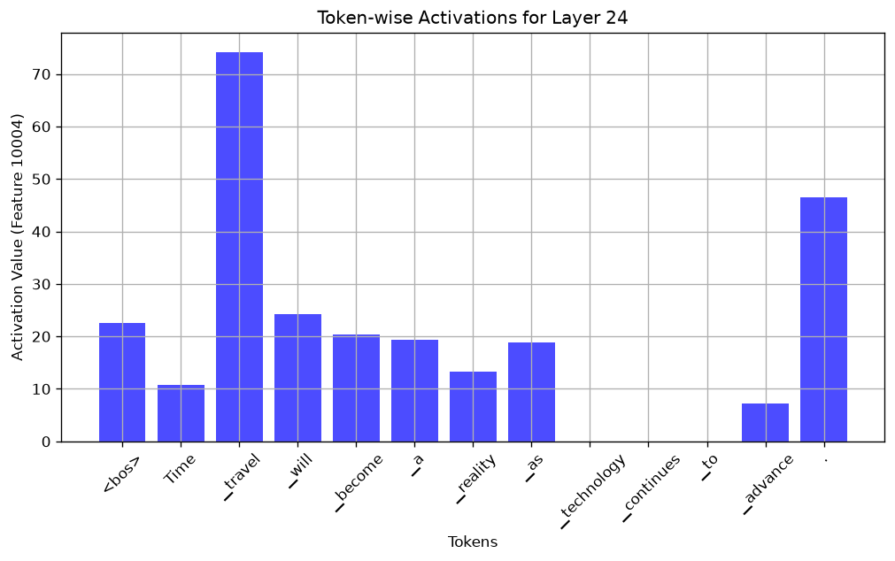
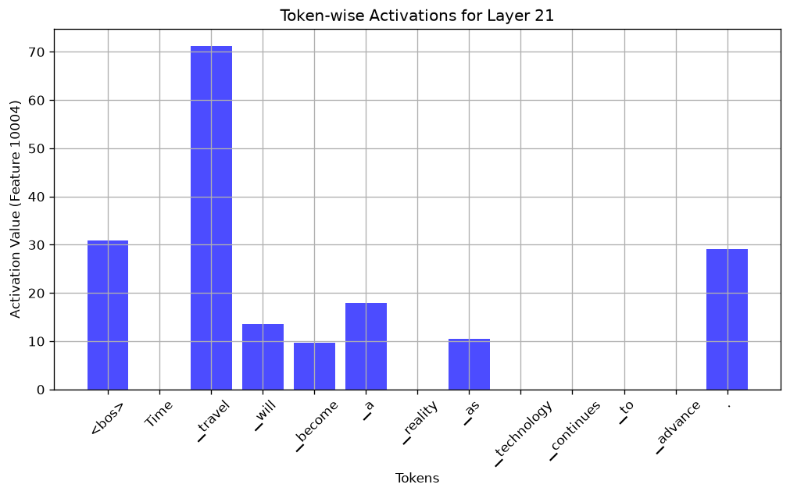
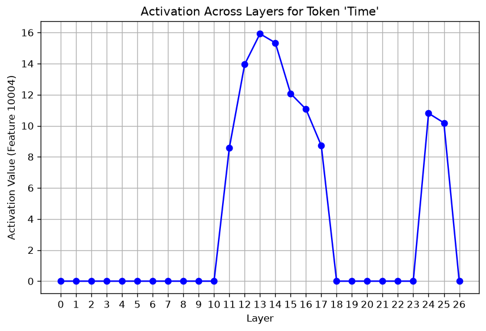
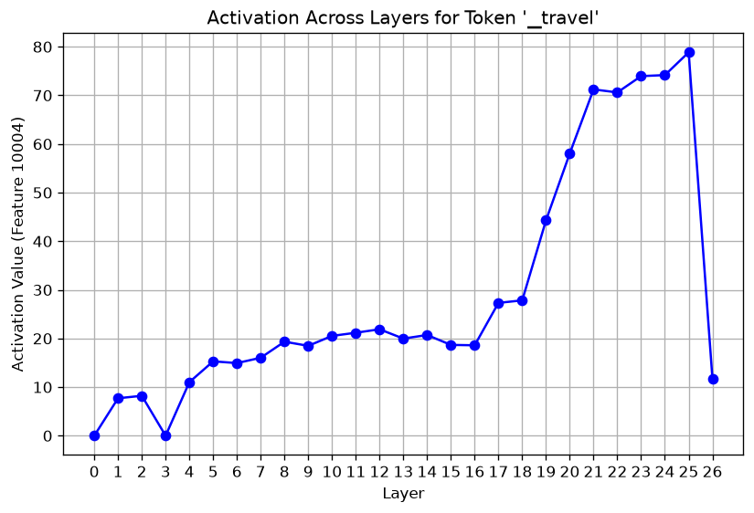
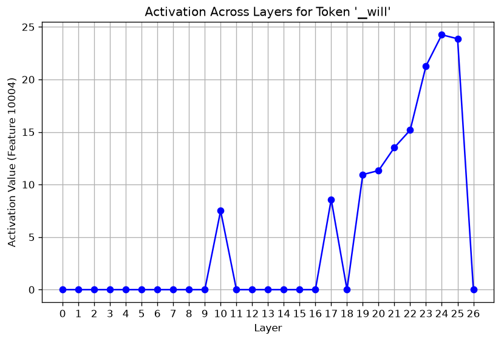

Q7.4–7.6 把 hidden_states[24] 交給 SAE：13 個 token 裡 ▁travel 最亮（74.17）。投影片稱它「layer 24」，其實是 block 23 的輸出，而 SAE 是在 block 20 的輸出（[21]）上訓練的（S4）。本機讓同一個 SAE 重建每一個索引：重建誤差 FVU 在 [21] 最低（0.290），往兩邊都變差，形成 U 形；FVU 小於 1 的只有索引 17–24，Q7.4 的 [24] 已經是 0.918。Q7.7–7.9 的 x 軸寫「Layer」，其實是索引 0–26；最後一格 [26] 經過最後的 norm，範數從約 540 掉到約 100，feature 幾乎全滅。把它縮放回去，feature 會回來，但方向也變了，所以尺度是主因之一，不是唯一原因。
- 本章對應的原始碼：hw3.py:409–429（
plot_token_activations）、:432–453（plot_layer_activations）、:472–478（q7的後半，Q7.4–7.9）。 - 本章的實測來自 hw3.py 的兩次輸出：預設的
logs/run_seed0.txt（Q7 段第 241–258 行）與換旗標的logs/run_q7_layer21_tok123.txt（指令--q 7 --sae-layer-idx 21 --token-idx 1 2 3），共五張圖；以及事實腳本docs/tools/hw03_facts.py的q7、rescale26、pre_ch08、pre_ch09段（logs/facts_q4_q7.txt、logs/facts_review1_shapes_q4steps_rescale26.txt、logs/facts_pre_ch08.txt、logs/facts_pre_ch09.txt），與旗標超出範圍的紀錄logs/run_q7_bad_flags.txt。log 在docs/HW03/logs/，圖在docs/HW03/img/。 - FACTS 指本機的事實清單
docs/HW03/FACTS.md；本章引的是「Q7 實測」「ch08 前置補測」「ch09 把索引 26 縮放回 norm 前的尺度」「ch09 前置補測」四節。 - SAE 的式子、JumpReLU 與門檻、FVU 與 L0 的定義、R5（
[20]vs[21]）、R6（<bos>）都在第 8 章；hidden_states 的 27 個索引與範數在第 0 章 0.9 節。這一章只回指。S4 是全書大綱問題對照表裡「投影片與程式不一致」的第 4 條。
9.1 這一題要做什麼
投影片 p.26–27 是 Q7 的後六小題，句子都是「Time travel will become a reality as technology continues to advance.」：
- Problem 7-4～7-6（p.26，各 0.2 分）：「based on the activations for each token in layer 24 about feature 10004, which of the following statement is correct?」，三題都是選擇題，看 layer 24 上每個 token 的值。
- Problem 7-7～7-9（p.27，各 0.2 分）：第 1 題問「Based on the activation plots across all layers, which of the following statement is INCORRECT?」，提示是「You can alter the tokens and observe the figure. (e.g. the lower/deeper layers tend to process complex information)」；第 2、3 題是「這個敘述是對還是錯」。
敘述的內容都在 Gradescope 上，不在投影片與 Colab 裡。本書不編選項，也不把任何敘述寫成標準答案（理由見目錄頁第 1 節）；這一章講清楚圖上每一點是怎麼算出來的、哪些點可以當真，並列出本機的數字。
hw3.py 的這兩題對應原版 Colab 第 36–39 格（第 36、38 格是「## Q7.4~7.6」「## Q7.7~7.9」標題）。原版第 37 格最後是這樣呼叫的：
######################## (Q7.4 ~ 7.6) ######################## # Simply observe the figure layer_idx = 24 prompt = "Time travel will become a reality as technology continues to advance." plot_token_activations(model, tokenizer, sae, prompt, feature_idx, layer_idx) ###################################################################
第 39 格最後：
######################## (Q7.7 ~ 7.9) ######################## # Alter the token index to observe the figure token_idx = 1 prompt = "Time travel will become a reality as technology continues to advance." plot_layer_activations(model, tokenizer, sae, prompt, token_idx) ###################################################################
原版要你直接改 layer_idx、token_idx 這兩個變數。hw3.py 的差別：
- 旗標：
layer_idx改成--sae-layer-idx（預設 24），token_idx改成--token-idx（預設 1，可以一次給好幾個，每個各畫一張圖；第 0 章旗標表）。 - 印出數值：原版只畫圖；hw3.py 另外把每個 token 的值（:419–420）、每個索引的值（:443–444）印出來，本章的數字可以直接從終端機讀。
- 其他：和第 8 章一樣，SAE 在
load_sae裡一次搬到 GPU，函式加@torch.no_grad()，轉 numpy 前多一個.float()，plt.show()改成存檔，檔名帶上索引（q7_token_activations_L24.png、q7_layer_activations_tok1.png）。
9.2 Q7.4–7.6：一層、每個 token
@torch.no_grad()
def plot_token_activations(model, tokenizer, sae, prompt, feature_idx=10004, layer_idx=0):
token_ids = tokenizer(prompt, return_tensors="pt")["input_ids"].to(DEVICE)
token_list = tokenizer.convert_ids_to_tokens(token_ids.squeeze().tolist())
outputs = model(token_ids, output_hidden_states=True)
layer_idx = layer_idx if layer_idx is not None else sae.cfg.hook_layer
feature_acts = sae.encode(outputs.hidden_states[layer_idx]).squeeze()
print(f"feature_acts shape: {feature_acts.shape}")
activations = feature_acts[:, feature_idx].squeeze().float().cpu().numpy()
for t, a in zip(token_list, activations):
print(f" {t!r:>16} {a:.4f}")
plt.figure(figsize=(10, 5))
plt.bar(range(len(token_list)), activations, color="blue", alpha=0.7)
plt.xticks(range(len(token_list)), token_list, rotation=45)
plt.xlabel("Tokens")
plt.ylabel(f"Activation Value (Feature {feature_idx})")
plt.title(f"Token-wise Activations for Layer {layer_idx}")
plt.grid(True)
save_fig(f"q7_token_activations_L{layer_idx}.png")逐段讀：
- :411–413：切 token（
tokenizer(...)和第 8 章的tokenizer.encode一樣會在前面加<bos>），把 id 轉回 token 字串當 x 軸標籤，一次 forward 拿到 27 個 hidden state。這句切成 13 個 token：<bos>加 12 個字詞。 - :415：
layer_idx是None時改用sae.cfg.hook_layer。原版的 docstring 也寫「None uses sae.cfg.hook_layer」。hw3.py 的旗標是整數、預設 24，這一行實際上走不到None那一支；就算走到，拿到的也是[20]，和第 8 章的 R5 一樣差了一層。 - :416：把
hidden_states[layer_idx]交給 SAE，.squeeze()去掉 batch 那一維。印出的形狀是[13, 16384]：13 個 token，每個 16384 個 feature。layer_idx是 hidden_states 的索引，不是 block 編號（S4，9.4 節）。 - :418–420：取第 10004 欄，逐 token 印出來。
- :422–429：畫成長條圖，標題寫「Layer {layer_idx}」，存成
q7_token_activations_L{layer_idx}.png。
prompt = "Time travel will become a reality as technology continues to advance."
######################## (Q7.4 ~ 7.6) ########################
plot_token_activations(model, tokenizer, sae, prompt, feature_idx, args.sae_layer_idx)
######################## (Q7.7 ~ 7.9) ########################
for token_idx in args.token_idx:
plot_layer_activations(model, tokenizer, sae, prompt, token_idx, feature_idx)預設 --sae-layer-idx 24 時，hw3.py 印出的是（logs/run_seed0.txt 第 241–255 行，逐字；本機的絕對路徑改寫成相對路徑）：
feature_acts shape: torch.Size([13, 16384])
'<bos>' 22.5960
'Time' 10.8022
'▁travel' 74.1713
'▁will' 24.2492
'▁become' 20.4319
'▁a' 19.4009
'▁reality' 13.2850
'▁as' 18.8962
'▁technology' 0.0000
'▁continues' 0.0000
'▁to' 0.0000
'▁advance' 7.2241
'.' 46.4142
[saved] HW03/outputs/q7_token_activations_L24.png

q7_token_activations_L24.png（預設 --sae-layer-idx 24，指令 .venv/bin/python HW03/hw3.py --seed 0）。標題的「Layer 24」是 hidden_states[24]，也就是 block 23 的輸出。x 軸標籤的 ▁ 是 token 前的空白記號。讀這張圖：
▁travel最大，74.17；其次是句尾的.46.41。▁technology、▁continues、▁to三個是 0。- 其他 token 大多在 10–25 之間，
<bos>也有 22.60（第 8 章 R6 的同一個現象）。 ▁advance的 7.2241 只比門檻 7.1234 多一點點；JumpReLU 下，非零的值都在門檻以上（第 8 章 8.4 節）。
這些是「這個 SAE 在 hidden_states[24] 上的輸出」。它們能代表多少意思，要看 SAE 在這一層重建得好不好，這是 9.4 節的主題。
9.3 換到 SAE 本來的位置：--sae-layer-idx 21
SAE 是在 block 20 的輸出、也就是 hidden_states[21] 上訓練的（第 8 章 8.8 節）。把旗標改成 21，就是在它本來的位置上看同一句話。本機跑的指令是 .venv/bin/python HW03/hw3.py --q 7 --sae-layer-idx 21 --token-idx 1 2 3（--token-idx 是下一節要用的），Q7.4–7.6 的部分印出（logs/run_q7_layer21_tok123.txt 第 21–35 行，逐字；路徑改寫成相對路徑）：
feature_acts shape: torch.Size([13, 16384])
'<bos>' 30.9524
'Time' 0.0000
'▁travel' 71.2294
'▁will' 13.5252
'▁become' 9.6190
'▁a' 17.8892
'▁reality' 0.0000
'▁as' 10.5246
'▁technology' 0.0000
'▁continues' 0.0000
'▁to' 0.0000
'▁advance' 0.0000
'.' 29.1788
[saved] HW03/outputs/q7_token_activations_L21.png

.venv/bin/python HW03/hw3.py --q 7 --sae-layer-idx 21 --token-idx 1 2 3 存的 q7_token_activations_L21.png，本書另存成 img/var_q7_token_activations_L21.png。這是 SAE 訓練時用的位置（block 20 的輸出）。和 [24] 比：▁travel 仍然最大（71.23），但 Time、▁reality、▁advance 從非零變成 0，非零的 token 從 10 個變成 7 個（都含 <bos>）。為什麼 Time 與 ▁reality 是 0？第 8 章手算過這一句在 [21] 上的預激活（logs/facts_pre_ch08.txt）：
| token | [21] 的預激活 | 和門檻 7.1234 比 | 輸出 |
|---|---|---|---|
Time | 5.056 | > 0 但低於門檻 | 0 |
▁reality | 5.217 | > 0 但低於門檻 | 0 |
▁advance | −1.741 | ≤ 0 | 0 |
▁as | 10.525 | 超過 | 10.5246 |
Time 和 ▁reality 都是正的，只是沒過門檻，所以被 JumpReLU 歸零；一般的 ReLU 會留下約 5。到了 [24]，它們的值變成 10.80 與 13.29，過了門檻。[24] 上亮的 token 比較多，和下一節看到的「SAE 在 [24] 上每個 token 有 417.4 個 feature 亮」是同一個方向：在它沒訓練過的層上，SAE 整體亮得比較多。這是兩組數字並列的觀察，本機沒有逐一追每個 token 為什麼過門檻。
9.4 「layer 24」是哪一層，這把量尺在那裡準不準（S4）
先把名字對齊。hidden_states 的索引比 block 編號大 1（第 0 章 0.9 節）：
- 投影片 p.26 的「layer 24」、hw3.py 的
--sae-layer-idx 24、圖 9.1 標題的「Layer 24」，都是hidden_states[24]，也就是 block 23（0 起算）的輸出。 - SAE 訓練時用的是 block 20 的輸出，
hidden_states[21]。
所以 Q7.4–7.6 是拿一個在 block 20 上校正過的量尺，去量三層之後的 hidden state。第 8 章說過，量尺準不準看 FVU（重建誤差佔原本變異的比例；0 是完美，1 代表和「每個位置都猜這句話的平均向量」一樣差）與 L0（每個 token 平均幾個 feature 非零），定義在第 8 章 8.8 節。本機讓同一個 SAE 重建 prompt c 在全部 27 個索引上的 hidden state（logs/facts_pre_ch09.txt，都排除 <bos>）：
[21] 上訓練）重建 prompt c 每一個 hidden_states 索引時的 FVU，排除 <bos>（logs/facts_pre_ch09.txt 的 27 個值，本書手繪）。在 [21] 最低，往兩邊都變差；綠色區域是 FVU < 1 的索引 17–24。幾個代表性的索引（prompt c；prompt a 的趨勢相同）：
| 索引 | 是什麼 | FVU | L0 | 10004 的最大值（不含 <bos>，都在 ▁travel） |
|---|---|---|---|---|
[0] | embedding | 1.616 | 21.7 | 0（13 個 token 全是 0） |
[10] | block 9 的輸出 | 1.372 | 41.9 | 20.53 |
[12] | block 11 的輸出 | 4.988 | 214.3 | 21.89 |
[17] | block 16 的輸出 | 0.863 | 78.5 | 27.32 |
[20] | block 19 的輸出（hw3.py 的 Q7.2–7.3） | 0.458 | 60.9 | 58.06 |
[21] | block 20 的輸出（SAE 的位置） | 0.290 | 88.2 | 71.23 |
[24] | block 23 的輸出（Q7.4 預設） | 0.918 | 417.4 | 74.17 |
[25] | block 24 的輸出 | 2.623 | 981.2 | 78.85 |
[26] | block 25（最後一個 block）的輸出，再經過最後的 norm | 3.555 | 31.5 | 11.76 |
怎麼讀這張表與圖 9.3：
- U 形：SAE 在它訓練的
[21]重建得最好，離得越遠越差。FVU 小於 1 的只有索引 17–24；prompt a 是 17–23，它的[24]已經是 1.057（同一份 log）。 - Q7.4 預設的
[24]在邊緣：FVU 0.918，接近「和猜平均值一樣差」；L0 417.4，是[21]的 4.7 倍（計算值）。原本「每個 token 只亮幾十個 feature」的稀疏性已經不在了。 [25]最極端：每個 token 平均 981.2 個 feature 非零，FVU 2.623。[26]是另一種失效：L0 只剩 31.5，看起來很稀疏，FVU 卻是 3.555。原因是向量變得很短（9.6 節）。- 前段（0–16）大多 FVU 在 1.4 以上，
[12]、[13]甚至超過 4。在這些索引上，SAE 的輸出幾乎沒有「重建了這個向量」的意義。
結論：Q7.4–7.6 與 Q7.7–7.9 圖上的每一個數字，都是「這個 SAE 在那個索引上的輸出」。在 FVU 遠大於 1 的索引上，它不能讀成「模型在這一層有沒有想到時光旅行」；在 FVU 小於 1 的 17–24 之間，數字的意義比較強，但也只有 [21] 是 SAE 真正校正過的地方。這是作業設計的簡化（只用一個 SAE 看所有層），不是程式錯誤；Gemma Scope 其實為每一層各訓練了 SAE（Gemma 補充章 G.8 節的論文摘要：「trained on all layers and sub-layers」），作業只載入了第 20 層的那一個。
9.5 Q7.7–7.9：一個 token、每一層
@torch.no_grad()
def plot_layer_activations(model, tokenizer, sae, prompt, token_idx=0, feature_idx=10004):
token_ids = tokenizer(prompt, return_tensors="pt")["input_ids"].to(DEVICE)
token_list = tokenizer.convert_ids_to_tokens(token_ids.squeeze().tolist())
outputs = model(token_ids, output_hidden_states=True)
num_layers = len(outputs.hidden_states)
activations = []
for layer_idx in range(num_layers):
feature_acts = sae.encode(outputs.hidden_states[layer_idx]).squeeze()
activations.append(feature_acts[token_idx, feature_idx].item())
print(f"Token {token_idx} = {token_list[token_idx]!r}, activations per layer:")
print(" " + ", ".join(f"L{i}:{a:.2f}" for i, a in enumerate(activations)))
plt.figure(figsize=(8, 5))
plt.plot(range(num_layers), activations, marker="o", linestyle="-", color="blue")
plt.xlabel("Layer")
plt.ylabel(f"Activation Value (Feature {feature_idx})")
plt.title(f"Activation Across Layers for Token '{token_list[token_idx]}'")
plt.xticks(range(num_layers))
plt.grid(True)
save_fig(f"q7_layer_activations_tok{token_idx}.png")- :438：
num_layers = len(outputs.hidden_states)是 27，不是 26。變數名叫 layers，數的其實是 hidden_states 的個數：embedding 1 個加上 26 個 block 的輸出（最後一個經過 norm）。 - :440–442：對 27 個索引各 encode 一次（每次都是整句 13 個 token），取第
token_idx個 token 的 10004 號。 - :444：印成
L0:…, L1:…。這裡的「L」也是索引。 - :448：x 軸標成「Layer」，刻度 0–26。圖上的「Layer k」是
hidden_states[k]：0 是 embedding，k（1–25）是 block k − 1 的輸出，26 是最後 norm 之後。
token_idx 是 13 個 token 裡的位置，0 是 <bos>。預設 1 是 Time。本機在 logs/run_q7_layer21_tok123.txt 一次看了 1、2、3 三個 token（第 36–44 行，逐字；路徑改寫）：
Token 1 = 'Time', activations per layer: L0:0.00, L1:0.00, L2:0.00, L3:0.00, L4:0.00, L5:0.00, L6:0.00, L7:0.00, L8:0.00, L9:0.00, L10:0.00, L11:8.58, L12:13.95, L13:15.92, L14:15.34, L15:12.07, L16:11.07, L17:8.72, L18:0.00, L19:0.00, L20:0.00, L21:0.00, L22:0.00, L23:0.00, L24:10.80, L25:10.19, L26:0.00 [saved] HW03/outputs/q7_layer_activations_tok1.png Token 2 = '▁travel', activations per layer: L0:0.00, L1:7.70, L2:8.21, L3:0.00, L4:11.02, L5:15.30, L6:14.94, L7:16.03, L8:19.34, L9:18.49, L10:20.53, L11:21.18, L12:21.89, L13:19.98, L14:20.71, L15:18.68, L16:18.60, L17:27.32, L18:27.84, L19:44.30, L20:58.06, L21:71.23, L22:70.61, L23:73.96, L24:74.17, L25:78.85, L26:11.76 [saved] HW03/outputs/q7_layer_activations_tok2.png Token 3 = '▁will', activations per layer: L0:0.00, L1:0.00, L2:0.00, L3:0.00, L4:0.00, L5:0.00, L6:0.00, L7:0.00, L8:0.00, L9:0.00, L10:7.51, L11:0.00, L12:0.00, L13:0.00, L14:0.00, L15:0.00, L16:0.00, L17:8.59, L18:0.00, L19:10.95, L20:11.33, L21:13.53, L22:15.18, L23:21.28, L24:24.25, L25:23.87, L26:0.00 [saved] HW03/outputs/q7_layer_activations_tok3.png
預設只跑 Time 的那一條，和全部題目一起跑時（logs/run_seed0.txt 第 256–258 行）完全相同。

q7_layer_activations_tok1.png（預設 --token-idx 1，Time；指令 .venv/bin/python HW03/hw3.py --seed 0）。x 軸的「Layer」是 hidden_states 的索引 0–26。
.venv/bin/python HW03/hw3.py --q 7 --sae-layer-idx 21 --token-idx 1 2 3 存的 q7_layer_activations_tok2.png（▁travel），本書另存成 img/var_q7_layer_activations_tok2.png。--sae-layer-idx 不影響這張圖。
q7_layer_activations_tok3.png（▁will），本書另存成 img/var_q7_layer_activations_tok3.png。三條曲線各有特點：
Time：索引 11–17 有一段（最高是 13 的 15.92），18–23 全是 0（包括 SAE 的[21]：預激活 5.056，沒過門檻，9.3 節），24、25 又出現 10.80、10.19，26 是 0。▁travel：從索引 1 就開始非零（7.70，3 是 0），大致一路上升，中間有小回落（例如 12→13 是 21.89→19.98），在[21]是 71.23、[25]是 78.85，到 26 掉到 11.76。▁will：前段只有 10、17 兩個零星的值，19 起從 10.95 升到 24 的 24.25，26 是 0。
對照圖 9.3 再讀一次：Time 的那段「11–17」落在 FVU 2.5–5 的區間，那裡的值是 SAE 在量尺最不準的地方給出的；在 FVU 小於 1 的 17–24 裡，Time 只有 17、24 兩點非零。▁travel 在 17–24 之間從 27.32 升到 74.17，這一段是三條曲線裡最可信的部分。這些是同一份數字的兩種讀法，本機沒有更多實驗去分辨哪一段「真的」代表時光旅行的概念。
9.6 為什麼最後一格掉下去
三條曲線在索引 26 都掉到 0 或很小：▁travel 從 78.85 掉到 11.76，Time 與 ▁will 掉到 0。[26] 不是 block 25（最後一個 block）的原始輸出，而是再經過最後的 model.norm（RMSNorm）之後的值（第 0 章 0.9 節）。norm 把向量的長度壓回固定的尺度。Time 這個 token 的 hidden state 範數，依索引 0–26（logs/facts_q4_q7.txt）：
hidden_states L2 norm per index for token 'Time' (1): [72.0, 78.0, 82.0, 88.0, 85.0, 90.0, 125.0, 127.0, 225.0, 242.0, 380.0, 515.0, 654.0, 700.0, 683.0, 681.0, 724.0, 659.0, 571.0, 518.0, 539.0, 546.0, 568.0, 561.0, 566.0, 540.0, 117.0]
在 SAE 的 [21] 是 546，[25] 是 540，到 [26] 突然只剩 117，短了約 4.6 倍（計算值；其他 token 從 [25] 到 [26] 短了約 4.9–11.8 倍，由下面的範數算出）。SAE 的編碼是 x · W_enc + b_enc 再比門檻，向量短了這麼多，內積也跟著縮小，很容易全部落到門檻以下。這是很自然的解釋，但它說的只是「尺度」。[25] 和 [26] 之間其實隔了兩件事：[25] 是 block 24 的輸出，[26] 是 block 25 的輸出再經過 norm。所以兩者的方向也可能不同：block 25 自己會加東西上去，norm 也會依每個維度的權重重新縮放。
本機做了一個直接的檢查（rescale26）：把 [26] 的每個 token 向量放大到和 [25] 一樣長，方向不動，再交給 SAE。feature 10004 的值（logs/facts_review1_shapes_q4steps_rescale26.txt）：
| 輸入 | <bos> | Time | ▁travel | ▁will | ▁technology | ▁continues | ▁to | . |
|---|---|---|---|---|---|---|---|---|
hidden_states[25] | 15.31 | 10.19 | 78.85 | 23.87 | 0 | 0 | 0 | 55.78 |
hidden_states[26]（hw3.py 的做法） | 0 | 0 | 11.76 | 0 | 0 | 0 | 0 | 11.39 |
[26] 每個 token 放大到 [25] 的長度 | 0 | 15.41 | 84.92 | 40.58 | 19.14 | 11.71 | 21.99 | 64.69 |
同一份 log 的另外兩行：每個 token 的範數，[25] 是 540–946（<bos> 4244），[26] 是 80–149；[25] 與 [26] 同一個 token 的 cosine（方向相似度，1 是同方向）只有 0.467–0.802，大多在 0.63–0.68 之間。
兩件事要一起讀：
- 尺度確實是主因之一：放大回去，feature 10004 回來了，
▁travel84.92 甚至比[25]的 78.85 還高。 - 但不只是尺度：原本在
[25]是 0 的▁technology、▁continues、▁to，放大後也變成 19.14、11.71、21.99；兩個索引的向量方向差很多（cosine 約 0.65）。放大後的[26]並沒有變回[25]，SAE 看到的是另一個向量。方向的差異有多少來自最後一個 block、多少來自 norm 的逐維縮放，這個實驗沒有分開（推論：兩者都有份）。
所以「最後一格掉下去」的正確說法是：最後的 norm 把向量縮短了好幾倍（Time 約 4.6 倍），這是主因之一；向量的方向也變了（最後一個 block 加上 norm），這一格本來就不是 SAE 該量的東西。「純粹是尺度問題」這種說法，被上面那三個從 0 變非零的 token 否定了。
9.7 怎麼讀投影片 p.27 的提示
p.27 第 1 小題的提示寫「the lower/deeper layers tend to process complex information」，意思是要你從逐層的圖上，想想哪些層在處理比較「複雜」的資訊。「越深的層處理越抽象、越複雜的資訊」是可解釋性研究常見的一般說法；本書引它，只因為投影片寫了，本機沒有驗證這個一般說法。
拿本章的圖去對這類說法時，要先記住兩個前提：
- 量尺只在一層校正過：曲線上的每一點都用同一個 SAE 量，FVU 小於 1 的只有索引 17–24（圖 9.3）。「feature 10004 在索引 13 很亮」只能說是「這個 SAE 在
[13]上的輸出」，那裡的 FVU 是 4.273。 - x 軸是索引不是 block：圖上的「Layer 24」是 block 23；「Layer 26」是 norm 之後，不是第 26 個 block（Gemma 只有 26 個 block，編號 0–25）。
在這兩個前提下，本章能給的觀察是：在 SAE 比較可信的 17–24 之間，▁travel 與 ▁will 大致隨索引上升（▁travel 從 27.32 到 74.17，22 有小回落；▁will 從 8.59 到 24.25，18 是 0），Time 大多是 0。這是一句話、一個 feature、一個 SAE 的實測，不是「模型在第幾層想到時光旅行」的證據。Gradescope 上的敘述要怎麼判斷，留給你自己對照圖與這些前提。
9.8 旗標的邊界
兩個旗標都沒有檢查範圍：
--sae-layer-idx是 hidden_states 的索引，合法的是 0–26。--token-idx是 prompt c 裡的位置，13 個 token，合法的是 0–12（0 是<bos>）。
超出時（logs/run_q7_bad_flags.txt，traceback 的尾段，逐字）：
$ .venv/bin/python HW03/hw3.py --q 7 --sae-layer-idx 27
plot_token_activations(model, tokenizer, sae, prompt, feature_idx, args.sae_layer_idx)
File ".venv/lib/python3.12/site-packages/torch/utils/_contextlib.py", line 124, in decorate_context
return func(*args, **kwargs)
^^^^^^^^^^^^^^^^^^^^^
File "HW03/hw3.py", line 416, in plot_token_activations
feature_acts = sae.encode(outputs.hidden_states[layer_idx]).squeeze()
~~~~~~~~~~~~~~~~~~~~~^^^^^^^^^^^
IndexError: tuple index out of range
exit=1
$ .venv/bin/python HW03/hw3.py --q 7 --token-idx 13
plot_layer_activations(model, tokenizer, sae, prompt, token_idx, feature_idx)
File ".venv/lib/python3.12/site-packages/torch/utils/_contextlib.py", line 124, in decorate_context
return func(*args, **kwargs)
^^^^^^^^^^^^^^^^^^^^^
File "HW03/hw3.py", line 442, in plot_layer_activations
activations.append(feature_acts[token_idx, feature_idx].item())
~~~~~~~~~~~~^^^^^^^^^^^^^^^^^^^^^^^^
IndexError: index 13 is out of bounds for dimension 0 with size 13
exit=1
要注意的是錯誤出現的時間：兩者都是在 Q7.1–7.3 已經跑完、印出、存好兩張直方圖之後才出錯；--token-idx 13 甚至先跑完 Q7.4–7.6、存好長條圖，到 Q7.7 才停下（FACTS「ch09 前置補測」）。所以終端機上會先看到一大段正常的輸出，最後才是 traceback，結束碼 1。
9.9 讀 code 不盡信文件
讀 code 不盡信文件：S4 投影片的「layer 24」是 block 23，而且 SAE 沒在那裡訓練過
投影片說的：p.26「based on the activations for each token in layer 24 about feature 10004」；p.27 的圖 x 軸是「Layer」。
程式做的：hw3.py:416 與原版 Colab 第 37 格把 outputs.hidden_states[24] 交給 SAE。hidden_states[24] 是 block 23（0 起算）的輸出，不是 block 24；Q7.7–7.9 的「Layer 0–26」也是索引，0 是 embedding、26 是最後 norm 之後（9.4 節、9.5 節）。同一種差一，第 8 章的 R5 在 Q7.2–7.3 也碰到了（第 8 章 8.8 節）。
後果：SAE 是在 block 20 的輸出（[21]）上訓練的。拿去量別的索引，重建誤差 FVU 從 [21] 的 0.290 升到 [24] 的 0.918、[25] 的 2.623、[26] 的 3.555；FVU 小於 1 的只有索引 17–24（prompt c）。在其他索引上，feature 的值只能說是「這個 SAE 在那裡的輸出」，不能讀成「模型在這一層有沒有這個概念」。
正確的讀法：把「layer k」一律讀成 hidden_states[k] = block k − 1 的輸出；要在 SAE 本來的位置看，用 --sae-layer-idx 21（9.3 節）。真的要逐層比較，應該每一層用各自訓練的 SAE；Gemma Scope 為每一層都釋出了 SAE，hw3.py 只載入第 20 層那一個（推論：換用各層的 SAE 需要改 load_sae 的 sae_id，本機沒有做過）。這是作業設計的簡化，hw3.py 為了和原版一致沒有改。
為什麼文件看不出來：投影片、旗標名稱 --sae-layer-idx、圖的標題「Layer 24」與 x 軸「Layer」，全都用「layer」稱呼一個索引；SAE 的 hook_layer 也叫「layer」，意思卻是 block 編號。只有對照 hidden_states 的定義（第 0 章 0.9 節）才看得出來。
9.10 動手做
自己跑 Q7.4–7.9
1. 預設（在 repo 根目錄；需要 GPU 與 HF 授權，見目錄頁 3.2 節；Q7 沒有隨機性，不需要 --seed）：
.venv/bin/python HW03/hw3.py --q 7
Q7.1–7.3 的輸出見第 8 章 8.10 節。之後依序印出 9.2 節那 15 行（feature_acts shape、13 個 token、[saved] …/HW03/outputs/q7_token_activations_L24.png），再印 Token 1 = 'Time', activations per layer:、一行 L0:…, L26:…、[saved] …/q7_layer_activations_tok1.png，數字和 9.2、9.5 節相同。Q7 整題約 2.5 秒（含載入 SAE、不含載入 Gemma；第 0 章 0.10 節）。
2. 換到 SAE 的位置、一次看三個 token（同樣在 repo 根目錄）：
.venv/bin/python HW03/hw3.py --q 7 --sae-layer-idx 21 --token-idx 1 2 3
輸出應該和 9.3、9.5 節貼的完全相同：Q7.4–7.6 的長條圖存成 HW03/outputs/q7_token_activations_L21.png，Q7.7–7.9 存三張 q7_layer_activations_tok1.png、_tok2.png、_tok3.png。tok1 會覆蓋第 1 步的同名檔，內容相同（--sae-layer-idx 不影響 Q7.7–7.9）。Q7.2–7.3 的兩個 max_activation 也不變（第 8 章的 R5）。
3. 每個索引的 FVU 與最後一格的縮放實驗（事實腳本，在 repo 根目錄，會載入模型與 SAE，每段幾秒；結果印在終端機）：
.venv/bin/python docs/tools/hw03_facts.py pre_ch09 .venv/bin/python docs/tools/hw03_facts.py rescale26
第一條的輸出格式就是 logs/facts_pre_ch09.txt：prompt c 與 prompt a 各 27 行，每行是 [索引] FVU … L0 … 10004 max … at '…'，可以拿來對圖 9.3。第二條就是 logs/facts_review1_shapes_q4steps_rescale26.txt 的 rescale26 段：三行 feature 10004 的值（[25]、[26]、放大後的 [26]），以及範數與 cosine 三行，對 9.6 節的表。
4. 旗標的邊界：跑 .venv/bin/python HW03/hw3.py --q 7 --token-idx 13，先看到 Q7.1–7.6 的正常輸出，最後是 9.8 節的 IndexError；用 echo $? 看結束碼是 1。改成 --token-idx 0 會畫 <bos> 的那一條，它在 [21] 是 30.95（第 8 章 R6 的同一個值）。
9.11 常見錯誤
把「Layer 24」讀成第 24 個 block
- 症狀
- 「layer 24 是倒數第二層」。
- 後果
hidden_states[24]是 block 23 的輸出；Gemma 的 block 編號是 0–25（S4）。- 正解
- 索引 k = block k − 1 的輸出；0 是 embedding，26 是最後 norm 之後。
把逐層曲線讀成「模型在第幾層想到時光旅行」
- 症狀
- 「Time 在第 13 層最亮，所以模型在第 13 層理解了時間」。
- 後果
- 那一點的 FVU 是 4.273，SAE 在那裡幾乎沒有重建能力。
- 正解
- 只說「這個 SAE 在
[13]上的輸出」；可信的範圍是 FVU < 1 的索引 17–24，最可信的是[21]。
說最後一格掉下去「純粹是尺度問題」
- 症狀
- 「norm 只是把向量縮短，放大回去就一樣了」。
- 後果
- 放大回去後
▁technology、▁continues、▁to從 0 變成非零，[25]與[26]的 cosine 只有約 0.65。 - 正解
- 尺度是主因之一；norm 也改變了方向。
以為 --sae-layer-idx 會改變 Q7.2–7.3 或 Q7.7–7.9
- 症狀
- 改了旗標，期待兩個
max_activation或逐層的圖跟著變。 - 後果
- 它只傳給
plot_token_activations（:474）；Q7.2–7.3 寫死hook_layer（第 8 章 R5），Q7.7–7.9 本來就跑全部索引。 - 正解
- 只有 Q7.4–7.6 的長條圖與檔名會變。
以為 L0 小就代表 SAE 量得準
- 症狀
- 看到
[26]的 L0 只有 31.5，覺得它和[21]一樣稀疏、一樣好。 - 後果
[26]的 FVU 是 3.555；稀疏是因為向量太短、大部分預激活過不了門檻。- 正解
- FVU 與 L0 要一起看；先看 FVU 有沒有小於 1。
旗標給錯，以為程式一開始就會報錯
- 症狀
--token-idx 13跑了一陣子、存了好幾張圖，以為沒問題。- 後果
- 錯誤到 Q7.7 才出現，前面存的圖是好的，但這一題沒有跑完，結束碼 1。
- 正解
--sae-layer-idx給 0–26、--token-idx給 0–12。
本章小結
- Q7.4–7.6：
plot_token_activations把hidden_states[--sae-layer-idx]交給 SAE，形狀 [13, 16384]；預設[24]上▁travel74.17 最大，▁technology、▁continues、▁to是 0。 - 換到 SAE 的位置
[21]：▁travel71.23；Time（預激活 5.056）、▁reality（5.217）低於門檻 7.1234，變成 0。 - S4：投影片的「layer 24」是
hidden_states[24]= block 23 的輸出。同一個 SAE 的 FVU 對索引是 U 形：[21]0.290 最低、[24]0.918、[25]2.623、[26]3.555，FVU < 1 只有 17–24；L0 在[25]暴增到 981.2。 - Q7.7–7.9：
plot_layer_activations對 27 個索引各 encode 一次，x 軸「Layer」是索引 0–26。▁travel大致一路上升到 78.85，Time有兩段，▁will在後段上升。 - 最後一格：
[26]經過最後的 norm，Time的範數從[25]的 540 掉到 117；放大回去 feature 會回來（▁travel84.92），但原本是 0 的 token 也亮了、cosine 約 0.65，所以尺度是主因之一，不是唯一原因。 - 讀逐層的圖時，數字是「這個 SAE 在那個索引上的輸出」，不是「模型在第幾層想到什麼」。
七題到這裡全部讀完。下一章是全書的總結：把第 0 章的架構圖和七題的探針位置疊在一起，用一張表回顧所有「讀 code 不盡信文件」的條目，最後是分三級的實作題庫，每一題都附上本機量過的數字可以對答案。
自我測驗
1. hw3.py 預設的 Q7.4–7.6 量的是哪一個 block 的輸出？SAE 是在哪一個 block 的輸出上訓練的？
--sae-layer-idx 24 傳的是 hidden_states[24]，也就是 block 23（0 起算）的輸出。SAE 的 hook_name 是 blocks.20.hook_resid_post，block 20 的輸出，對應 hidden_states[21]。差了三個 block（S4）。
2. 在 [21] 上，Time 的 feature 10004 是 0；它的預激活是 5.056。為什麼是 0？一般的 ReLU 會輸出多少？
JumpReLU 只保留超過門檻的值，10004 號的門檻是 7.1234，5.056 沒過，所以輸出 0。一般的 ReLU 會輸出 5.056。
3. 圖 9.3 的 FVU 在 [12] 是 4.988。這對讀 Time 在索引 11–17 那一段的值有什麼影響？
FVU 遠大於 1，表示 SAE 在那裡重建得比「每個位置都猜平均值」還差得多，它的 feature 值幾乎沒有「這個向量裡有什麼」的意義。Time 在 11–17 的值只能說是「這個 SAE 在那些索引上的輸出」，不能讀成模型在那幾層想到了時間。
4. 把 [26] 放大到 [25] 的長度後，feature 10004 回來了。為什麼還不能說「掉下去純粹是尺度問題」？
放大後原本在 [25] 是 0 的 ▁technology、▁continues、▁to 也變成非零（19.14、11.71、21.99），而且 [25] 與 [26] 的 cosine 只有 0.47–0.80。norm 不只改長度，也改了方向；放大後的向量並沒有變回 [25]。
5. 執行 hw3.py --q 7 --token-idx 13，什麼時候會出錯？在那之前會發生什麼？
prompt c 只有 13 個 token（0–12），13 超出範圍。錯誤發生在 Q7.7 的 plot_layer_activations（hw3.py:442，IndexError: index 13 is out of bounds for dimension 0 with size 13）；在那之前 Q7.1–7.6 都會正常跑完、印出並存圖。結束碼是 1。
延伸閱讀
- Lieberum et al., Gemma Scope: Open Sparse Autoencoders Everywhere All At Once on Gemma 2, 2024, arXiv:2408.05147：每一層、每一種子層都有各自的 SAE；本作業只用了第 20 層的那一個。
- Rajamanoharan et al., Jumping Ahead: Improving Reconstruction Fidelity with JumpReLU Sparse Autoencoders, 2024, arXiv:2407.14435：JumpReLU 與重建品質（FVU 類指標）的取捨。
- transformers 文件 Model outputs：
hidden_states是「embedding 的輸出加上每一層的輸出」，對照第 0 章 0.9 節的實測。 - matplotlib 文件 pyplot.bar、pyplot.plot：兩個畫圖函式用到的 API。